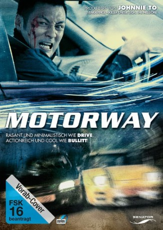

#10806 Motorway
 
 IMDB-Wertung: 5.9 / 10
IMDB-Wertung: 5.9 / 10  Metascore: 0
Metascore: 0 
Cheung arbeitet seit kurzem zusammen mit Lo bei den Stealth Riders, einer Spezialeinheit der Polizei von Hongkong. Die Stealth Riders bestehen aus einer Gruppe der besten Fahrer, die mit schnellen Autos Jagd auf die Teilnehmer illegaler Autorennen oder auf kriminelle Fluchtwagenfahrer macht. Eines Tages nimmt Neuling Cheung die Verfolgung des berüchtigten Jiang auf, der auf seinem Gebiet eine Legende ist. Jiang ist ein erstklassiger Fluchtfahrer, der vor 15 Jahren in den Ruhestand gegangen ist und als eine der größten Gefahren der Straßen gilt. Die Jagd beginnt ohne Kompromisse und auf einer Autobahn kommt es dann schließlich zu einem todesmutigen und explosiven Showdown. Und eines ist klar: Nur einer wird die halsbrecherische Jagd überleben.
Jahr: 2012
Dauer: 89 Minuten
FSK: 16
Land: Hong-Kong Studio: Senator Home EntertainmentTonspuren: DTS-HD - ,
Untertitel: Deutsch,
Auflösung: 1080p (1920x1040) Größe: 11878 MB
Genre: Action, Drama, Krimi
Regisseur: Soi Cheang
Drehbuch: Joey O'Bryan, Joey O'Bryan, Kam-Yuen Szeto, Francis Yat-Chun Fung
Soundtrack: Alex Gopher, Xavier Jamaux
Darsteller:
 Anthony Chau-Sang Wong als Lo Fung
Anthony Chau-Sang Wong als Lo Fung Shawn Yue als Chan Cheung
Shawn Yue als Chan Cheung Xiaodong Guo als Jiang Xin
Xiaodong Guo als Jiang Xin- Barbie Hsu als Yee
 Josie Ho als Madame Wei
Josie Ho als Madame Wei Ka Tung Lam als Chong
Ka Tung Lam als Chong- Guangjie Li als Tan Yi
 Kathy Wu als Madam Wei's Secretary
Kathy Wu als Madam Wei's Secretary Michelle Ye als Lo Fung's wife
Michelle Ye als Lo Fung's wife- Frank M. Ahearn als Gin
- Hin-Wai Au als Crime unit officer
- Peter Wai-Hung Lau als Mr. Fu
- Wilfred Lau als Chan Cheung's friend
- Iva Law als Yee's friend
- Anson Chun-Yat Leung als Chan Cheung's friend
- Tracy Chui-Si Leung als Woman driver
- Haitao Li als Huang Zhong
- Frank Zong-Ji Liu als Police officer driving van
- Auston Lam Si-Kit als Traffic police officer
- Julius Brian Siswojo als Dutchman
- Chi-Wang Wong als Cop
- Ben Yuen als To
Datei: X:\HD-Eastern-Modern(A-M)\Motorway (2012, FSK16, 1920x1040).mkv seit 08.03.2019
Festplatte: HD Eastern+Western
 Es gibt insgesamt 104 Filme in der Gruppe 'HD-Eastern-Modern(A-M)'
Es gibt insgesamt 104 Filme in der Gruppe 'HD-Eastern-Modern(A-M)'